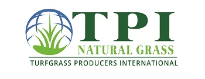
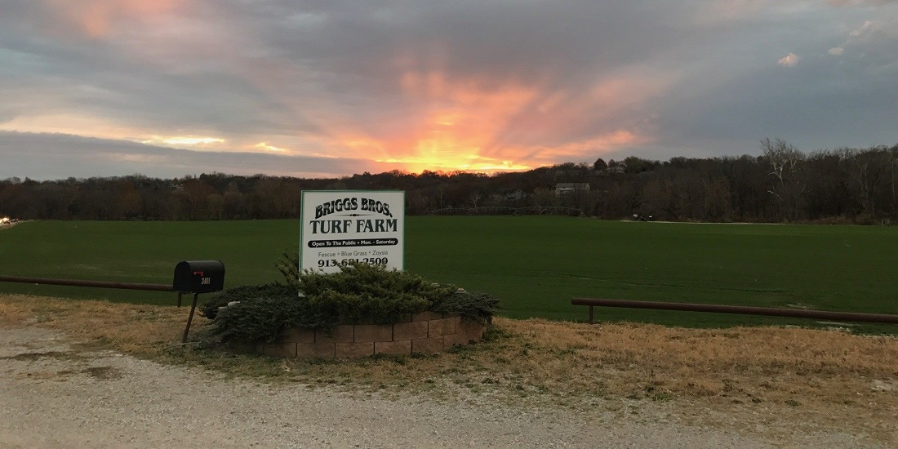
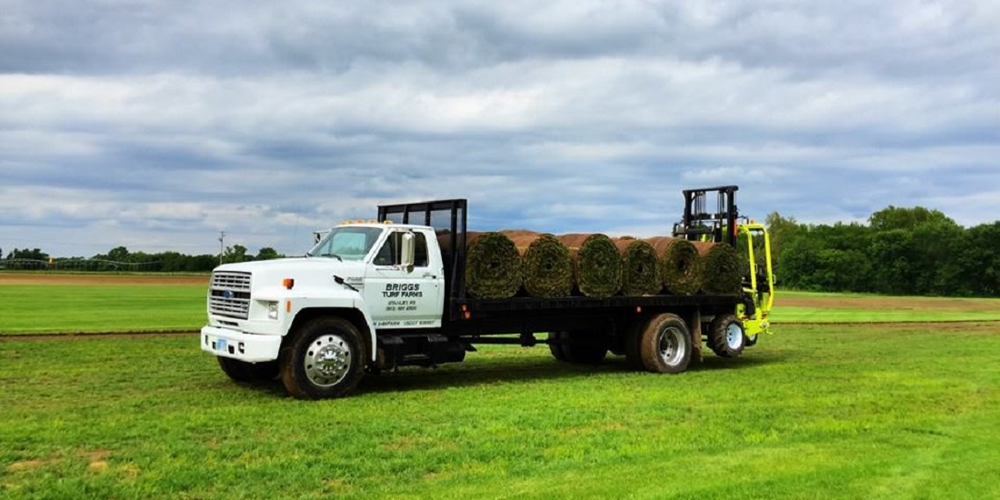
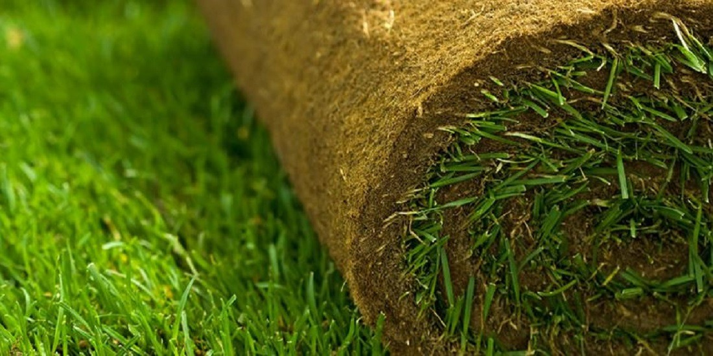
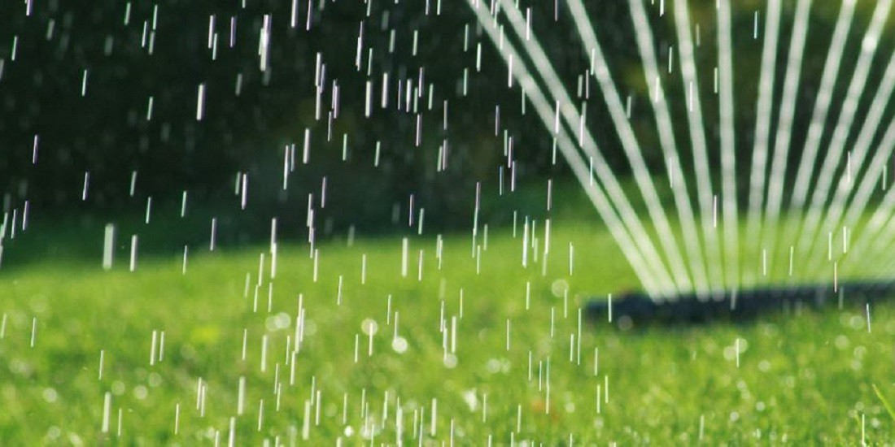
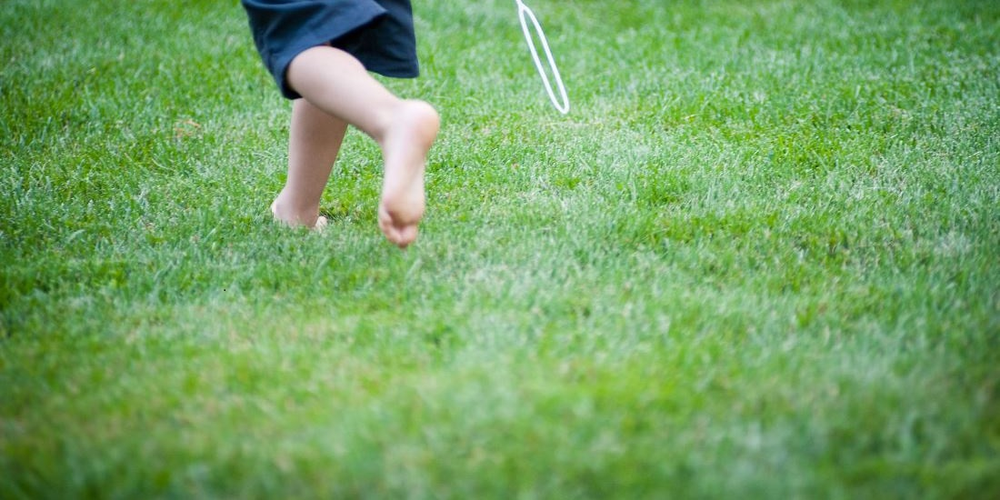

Fescue and Bluegrass sod for homeowners, builders, landscapers, and schools across the Kansas City area — grown right here, not trucked in from somewhere else.
Call 913-681-2500 See Our SodBriggs Brothers Sod Farms has been family-owned and operated for three generations, delivering the finest Fescue and Bluegrass sod to homeowners, builders, landscapers, schools, and parks throughout the Kansas City area.
As proud members of the Turfgrass Producers International (TPI), we hold ourselves to a higher standard — collaborating with university researchers and industry suppliers to make sure every roll of sod that leaves our farm is ready to thrive.


Whether you're refreshing a backyard or landscaping a commercial property, we have the sod and the service to match.
Premium turfgrass grown for the Kansas City climate. Not sure which is right for your yard? Compare the two.
Pick up directly from the farm, or let us bring it straight to your job site — small 1 sq. yard rolls or large rolls available.
Full installation service for residential and commercial properties, done right the first time. Prefer to do it yourself? See our install guide.
From a backyard refresh to a large commercial site, we offer both retail and wholesale pricing to match the size of your project.




Call us today for an order or an estimate — pickup, delivery, and installation all available.
Call 913-681-2500